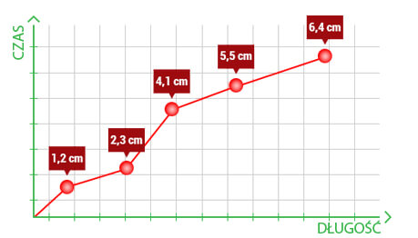
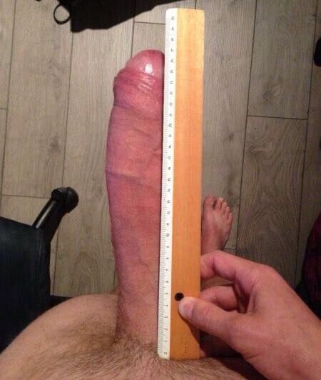
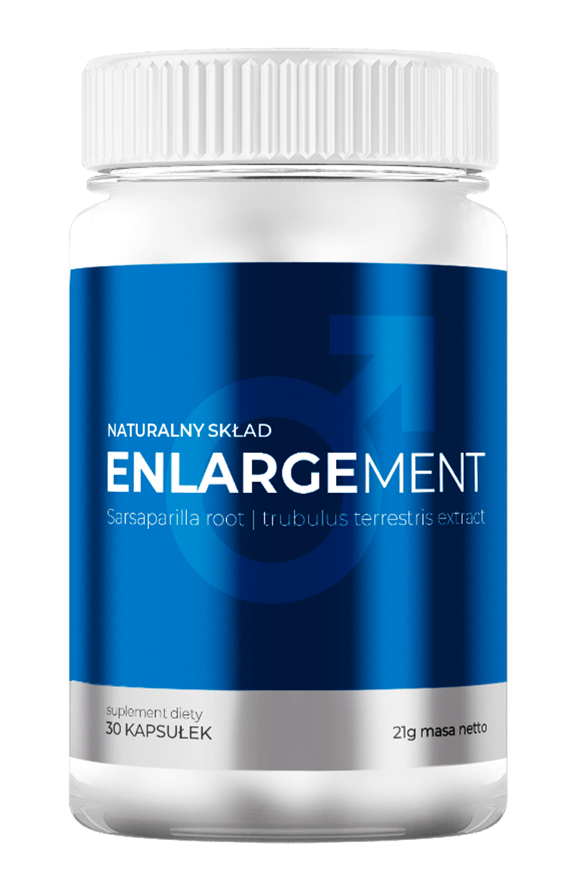

SEKSUOLODZY: TO POWIĘKSZA PENISA JUŻ PIERWSZEGO DNIA!
Seksuolodzy donoszą - wystarczy chwila, żeby powiększyć penisa nawet o 6,4 cm. Profesor Karol Harford
udowodnił testami medycznymi, że już po 120 minutach ciała jamiste wewnątrz członka zaczynają się
rozrastać. Jednocześnie krew jest szybciej pompowana do prącia, które zaczyna automatycznie i na
stałe zwiększać swoje rozmiary. Dzięki temu penis staje się dłuższy i grubszy, a erekcje stają się
twardsze, co pozwala zaspokoić partnerkę nawet 5 razy pod rząd.

Nowe odkrycie prof. Harforda dowodzi, że można równocześnie wydłużyć i pogrubić członka,
dodatkowo wzmacniając erekcję.
Prof. Harford z Kalifornia College stworzył superszybką i w 100% naturalną formułę
powiększającą penisa. W środowisku naukowym – od seksuologów, przez środowiska
akademickie – wszyscy uznają, że jest to naukowy przełom w walce z wstydliwymi problemami tysięcy
mężczyzn. Potwierdzony niezależnymi testami empirycznymi, badaniami laboratoryjnymi i
klinicznymi....
Tylko w USA i Japonii formułę profesora przetestowało już 9000 mężczyzn. Ankiety i wywiady
konsumenckie potwierdziły, że ma dwie główne właściwości:
-
Działa 3 razy skuteczniej i szybciej niż pompki do penisa, obciążniki, czy innego typu zabiegi.
-
Wydłuża penisa naturalnie i na stałe, poprawiając jego ukrwienie oraz zwiększając
ilość ciał jamistych.
Naturalny efekt po 30 dniach

Powiększysz penisa o pierwsze 2-3 cm już w pierwszym tygodniu – efekt gwarantowany
testamimedycznymi.
Oto, jak profesor tłumaczy działanie swojej superszybkiej formuły powiększającej penisa w sposób
naukowy:
„Tajemnica skuteczności formuły tkwi w jej składzie. Zastosowałem w niej unikalną mieszankę
substancji poszerzających ciała jamiste penisa, co radykalnie zwiększa jego rozmiar. Zwiększają
one poziom testosteronu do 9,7 ng (nanogram na ml krwi).
Najważniejszymi z nich są ekstrakt z korzenia sarsaparilla, buzdyganek naziemny oraz L-arginina –
to naturalne składniki poprawiające libido i udrażniające przepływ krwi, ale przede wszystkim,
widocznie powiększające penisa.
Substancje zawarte w formule pompują krew do penisa i odżywiają włókna mięśniowe działając na
więcej niż jeden sposób:
Po pierwsze, natychmiast stymulują członka do wzrostu, jednocześnie zwiększając
nasze libido i dostarczając brakującego testosteronu. Po drugie, co jest
szczególnie ważne z medycznego punktu widzenia, nikt bez dodatkowego wsparcia składnikami
aktywnymi nie odblokowuje pełnego potencjału ciał jamistych. To jedyny sposób, żeby zwiększyć
ich objętość do ich naturalnego maksymalnego rozmiaru. Gdy do penisa zaczyna napływać więcej
krwi, włókna zaczynają pęcznieć i stopniowo wydłużają członka, nawet o 6,4 cm.
Po trzecie, intensywnie uzupełniają niedobory metabolitów i oczyszczają naczynia
krwionośne z toksyn, przez co mogą one transportować krew lepiej i szybciej. To dlatego penis
nie tylko staje się większy, ale poprawia się kondycja wzwodu. Średni czas stosunku wynosi 32
minuty.
To właśnie synergia tych trzech działań pozwala na jednoczesne powiększanie penisa i wydłużenie
erekcji. Dzięki temu możliwy jest nie tylko rozrost członka o 73,4%, ale także intensywny seks,
podczas którego partnerka osiągnie nawet 5 orgazmów, bo penis będzie większy i wytrzymalszy”.
Ostrzeżenie – ufaj tylko sprawdzonym metodom!

Magazyn Science Facts uznał metodę profesora największym odkryciem zdrowotnym 2019
roku!!!
W nauce nie ma miejsca na przypadek. Nie ma miejsca na obietnice. Tylko wyniki badań mówią same
za siebie. Dlatego prof. Harford opracował specjalny test kliniczny, który potwierdził, że już
dwie godziny wystarczą, żeby powiększyć penisa o pierwsze 1-2 cm.
Badacze sprawdzili skuteczność kuracji na grupie 122 mężczyzn w wieku 18-45 lat. Uczestnicy
eksperymentu na co dzień stosowali tę metodę, którą sami opisali jako automatyczną i
nieinwazyjną. Celem testu było naukowe sprawdzenie: Czy formuła powiększająca penisa profesora
naprawdę gwarantuje powiększenie członka i wydłużenie erekcji. A o to wyniki badania:
Udokumentowane wyniki 4-tygodniowej kuracji prof. Harforda, opublikowane w czasopiśmie medycznym
Science Facts dział Man Health:
-
Na podstawie ankiet kwestionariuszowych, badacze policzyli, że uczestnicy wydłużali penisy średnio o
6,4 cm w 30 dni.
-
Analiza badania krwi uczestników dowiodła, że ciała jamiste zwiększały swoją objętość o minimum
71,4%, a testosteron rósł nawet do 9 nanogramów (u mężczyzn, którzy nie stosują tej metody, poziom
testosteronu może mieścić się jedynie w przedziale 2,2-3 nanogramów).
-
Badania wykazały pozytywny wpływ na wydłużenie erekcji, nawet do 47 minut.
-
Średnia długość członka u wszystkich respondentów po wykonaniu testu wynosiła 19,3 cm.
Przebieg kuracji, udokumentowany w trakcie eksperymentu badaczy*
*Uwaga redakcji - Zachowano oryginalną pisownię. Dane pacjenta zostały usunięte, ze względu na
ochronę prywatności.
TYDZIEŃ PIERWSZY
Zgłosiłem się do testów, ze swoim 12,3 cm wstydliwym problemem. Już po dwóch godzinach kuracji
odczułem pierwsze efekty. Członek jakby lekko łaskotał (ale nic mnie nie bolało!) i stopniowo się
wydłużał. Po dwóch dniach mierzył już 14,4 cm. Nie musiałem prawie nic robić, a wszystko działo się
automatycznie. Po 6 dniach ponownie wyciągnąłem centymetr. Wynik: 15,6 cm! Nabrałem pewności siebie
i poszedłem do współlokatorki, która zawsze jest chętna na seks! Po wszystkim powiedziała, że
jeszcze żaden facet nie dał jej tylu orgazmów w ciągu pół godziny.
TYDZIEŃ TRZECI
Czuję się dobrze, jak nigdy przedtem. Mam więcej energii w łóżku i nie wstydzę się zdjąć spodni – to
pewnie efekt pozbycia się stresu związanego z niewielkim penisem. Mój stosunek trwa minimum 20-30
minut, członek jest twardy i urósł o dodatkowe 3,2 cm. To daje już w sumie 18,9 cm w 3 tygodnie,
czyli 3,3 cm tygodniowo. Powiększenie penisa i wydłużenie stosunku to prawdziwe zbawienie. Wreszcie
czerpię przyjemność z seksu i zaspokajam dziewczyny, z którymi się spotykam.
TYDZIEŃ CZWARTY
Po 4 tygodniach przyszedł ostateczny sprawdzian. Członek osiągnął finalną długość 19,4 cm – w życiu
bym nie przypuszczał, że mogę mieć tak dużego członka! – i nie opadał zaraz po wytrysku. Poderwałem
nową dziewczynę w klubie, żeby zobaczyć jak sprawdzi się mój sprzęt. Była wręcz zachwycona tym, co
mam w bokserkach, a potem już tylko słuchałem jak krzyczy z rozkoszy. W ciągu 41 minut seksu
doprowadziłem ją do 5 orgazmów i sprawdziliśmy chyba wszystkie pozycje. Teraz nareszcie mogę uderzać
do każdej laski bez żadnego stresu, nie martwiąc się o rozmiar członka.”
Karta uczestnika testu:
|
29.08.2016
(początek badania) |
13.09.2016 |
27.09.2016 |
| Rozmiar |
12,3 cm |
16,1 cm |
19,4 cm |
| Średnia długość stosunku |
3,5 minuty (bez gry wstępnej) |
23 min |
41 min |
Ilość testosteronu
(nanograma)/ml krwi |
2,4 ng |
5,3 ng |
9,6 ng |
| Procentowe powiększenie ciał jamistych |
0% |
50,4% |
68,9% |
Z udokumentowanych relacji wynika, że kuracja powiększająca penisa opracowana przez profesora
zachwyca nie tylko naukowców, ale też zwykłych ludzi. Pewnie dlatego ta metoda szybko stała się
popularnym sposobem na walkę z męskim wstydem, małym członkiem i krótkimi erekcjami. Coraz więcej
osób chce sprawdzić na własnej skórze jej skuteczność.
Gdy zobaczyłem raport z badań klinicznych, byłem naprawdę zaskoczony. Od tamtej pory polecam
tę kuracje wszystkim swoim klientom, mającym wstydliwy problem z niewielkim penisem – są
zachwyceni.
Marian Wysocki – seksuolog z Wrocławia
Profesor otrzymywał tak dużo próśb od osób, które chciały przetestować jego superszybką kurację
powiększającą penisa i wydłużającą erekcję, że jego niewielkie laboratorium nie nadążało z jej
produkcją. Dlatego, zdecydował się podjąć współpracę z firmą, która będzie produkować suplement
zwiększający długość członka według jego receptury. Nazwał go po prostu .
Ponieważ jest to metoda naukowa, profesor Harford stwierdził, że liczą się tylko rezultaty, a nie
obietnice. Dlatego każdy preparat otrzymujesz wraz z potrójną gwarancją satysfakcji: oryginalności,
jakości oraz zadowolenia.
Jeśli po zastosowaniu nie osiągniesz gwarantowanych testami rezultatów, natychmiast
skontaktuj się się z profesorem Harfordem. Jego zespół uczyni wszystko co możliwe, aby spełnić Twoje
oczekiwania. To jest osobista gwarancja prof. Harford, potwierdzona przez producenta preparatu.
Dzięki niej – nic nie ryzykujesz!
Profesor Harford nie składa obietnic, tylko mówi o faktach. Bezsprzecznie, to najlepiej
udokumentowana kuracja powiększająca penisa jaka istnieje.
John Sogher, doktor Nauk o Zdrowiu i publicysta Worlds Health News
Pamiętaj – czytanie nawet o najlepszej metodzie powiększającej członka nie pozwoli Ci zwiększyć jego
rozmiarów. Dlatego, jeśli chcesz pochwalić się 20 cm penisem i doprowadzić partnerkę do 5 orgazmów
pod rząd – musisz sprawdzić ten sposób na własną rękę! Jeśli to zrobisz, przekonasz się, że
rezultaty są potwierdzone nie tylko testami medycznymi, ale także Twoją własną historią. Co więcej,
efekty są tak szybkie, że nie będziesz musiał czekać na nie dłużej niż 24 h. Możliwe, że gdybyś
wziął tabletkę tuż przed przeczytaniem tego tekstu, to już obserwowałbyś pierwsze efekty!
Ważna informacja: Pamiętaj, preparat zawiera tylko naturalne substancje i
nie koliduje z żadnymi lekami, dlatego w trakcie kuracji nie trzeba odstawiać leków przepisanych przez
lekarza
Po opublikowaniu tego artykułu, z przyjemnością odnotowujemy sukcesy, jakie osiąga wiele osób przy
użyciu preparatu (łącznie z autorem tego tekstu). Jeśli Ty też chcesz coś zrobić dla
polepszenia swojego życia seksualnego – nie zwlekaj! Przecież nie masz nic do stracenia! Kliknij w
poniższy link, żeby otrzymać , mając pewność, że dostaniesz oryginalny produkt, który
naprawdę działa!
OPINIE UŻYTKOWNIKÓW
6,4 cm więcej w miesiąc!
Mały penis frustrował mnie. Kiepski seks, uśmiechy litości ze strony kobiet, brak pewności, że
potrafię zaspokoić partnerkę... to tylko kilka kompleksów przez które cierpiałem.
geereccion polecił mi znajomy. Gdy go spróbowałem, wiedziałem że już NIGDY żadna kobieta
nie będzie się ze mnie śmiać! Dzięki niemu z dnia na dzień doprowadzałem dziewczyny do jęków
rozkoszy wielkim fjutem.
Karol
Zakopane, Polska
Bałem się sexu!
Byłem przerażony. 29 lat na karku i raptem 13 cm członek. Kobiety mnie lubiły, ale kiedy przychodziło
do akcji to była jakaś porażka. Następnego dnia udawały, że mnie nie znają. Dzięki tej metodzie
wszystko się zmieniło. Wchodziłem do połowy, a one już jęczały. Bałem się, że sąsiedzi nas usłyszą,
tak głośno krzyczały. W sumie powiększyłem penisa do 19,7 cm i był zdecydowanie grubszy. Mówiąc
wprost – ten preparat przywrócił mi pewność siebie.
Robert
Sandomierz, Polska
Dlaczego nie znałem ich wcześniej?!
Przez wiele lat szukałem sposobu na powiększenie penisa. Próbowałem ćwiczeń z których nic nie
wynikało, kupowałem pompki a nawet dałem sobie założyć na członka ekstander. Efekt? Zeeero efektu –
no, czasem udawało się chwilowo zwiększyć rozmiar by po chwili wrócił do swoich pierwotnych
wymiarów. Lata leciały a ja pogodziłem się, że moje 14cm to wszystko co mogę mieć. Gigantyczna
zmiana nastąpiła dzięki tej metodzie.
Krzysztof
Sanok, Polska
To odmieniło moje życie!!!
Ten sposób polecił mi znajomy, kolega twierdził, że znalazł wspaniały środek na powiększenie penisa.
Śmiałem się z niego bo sceptycznie podchodzę do suplementów jednak zachęcony gwarancją zwrotu
pieniędzy w przypadku braku efektów kupiłem 3 opakowania. Jakie było moje zdziwienie gdy po miesiącu
mój penis urósł o 1,7cm. Nie wierzyłem własnym oczom, zresztą nie tylko ja – moja żona była w szoku.
Piotr
Częstochowa, Polska
To było tak proste.

Dzięki tej metodzie powiększyłem penisa o 4,6cm co było dla mnie wynikiem marzeń. Nigdy nie
przypuszczałem, że dzięki tanim kapsułkom będę w stanie sobie pomóc w tak krótkim czasie.
Powiększanie penisa jeszcze nigdy nie było tak proste. Z początku miałem zamiar po skończeniu
kuracji zamówić kolejne opakowanie, jednak okazało się, że nie mam już takiej potrzeby ponieważ
efekty są
stabilne a mój członek jest taki jak chciałem.
Łukasz
Stalowa Wola, Polska



na Facebooku Dodaj komentarz